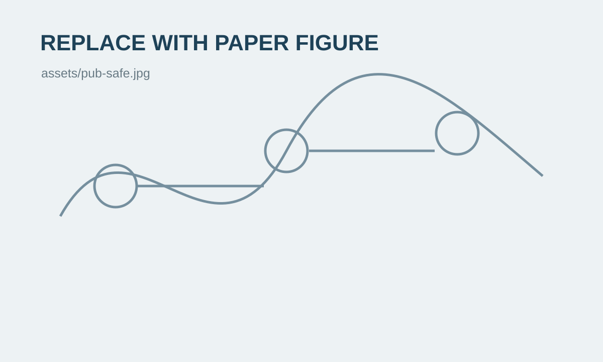

Our work on adaptive recurrent neural network control for safety-critical systems under DoS attacks was submitted to IEEE Transactions on Control of Network Systems.
Renjie Ma
I am an Associate Professor in the Department of Mechatronic Control and Automation and the State Key Laboratory of Robotics and Systems at Harbin Institute of Technology. My research focuses on AI-based control theory and applications, optimization and control for complex systems, and robotic control.
I am particularly interested in learning-enabled control with rigorous closed-loop guarantees, including safe learning motion planning and control, verifiable continual learning, data-driven and adaptive control, aperiodic-sampled control, and applications to soft robots, robotic manipulators, and mobile robots.
Updates
Latest News
Presented “Adaptive Event-Triggered Robust Trajectory Tracking Control of Soft Robots” at IEEE INDIN 2026 in Melbourne, Australia.
Two papers on aperiodic-sampled neural network control and adaptive event-triggered tracking control appeared in Automatica.
Received the Best Paper Award at the International Conference on Deep Learning and Automation (ICDLA 2026).
Research
AI-Based Control and Intelligent Robotic Systems
My research develops learning, optimization, and feedback-control methods with rigorous guarantees on stability, safety, robustness, and communication efficiency. Current interests span neural learning control, safe motion planning and control, data-driven and adaptive control, aperiodic-sampled control, and robotic systems.
AI-Based Control Theory & Applications
Modeling and learning control of nonlinear systems, safe learning motion planning and control, and verifiable continual learning.
Optimization & Control for Complex Systems
Data-driven control, model predictive control, adaptive control, and aperiodic-sampled control with rigorous performance guarantees.
Safe & Resilient Cyber-Physical Systems
Safety-critical control, secure estimation, attack-resilient control, event-triggered communication, and networked systems.
Robotic Control
Learning and robust control for biomimetic soft robots, robotic manipulators, autonomous ground vehicles, and microrobots.
Selected Work
Selected Publications
Representative publications. Paper figures can be added later to replace the current graphical placeholders.

IEEE Transactions on Intelligent Transportation Systems
Aperiodic-Sampled Fault-Tolerant Control for Autonomous Ground Vehicle via Descriptor Reduced-Order Observer
Experimental fault-tolerant tracking control for an autonomous ground vehicle using descriptor reduced-order observation.
Community
Academic Activities
Professional Service
Reviewer and academic service for journals and conferences in control, automation, intelligent systems, and robotics.
Conferences
Regular participation in international control, automation, and industrial informatics conferences.
Research Collaboration
Interested in collaborations at the intersection of machine learning, nonlinear control, cyber-physical systems, and robotics.
Teaching
Teaching & Mentoring
Graduate student supervision and research mentoring in control science, intelligent systems, and robotics.
Add courses, lecture notes, student projects, and recruitment information here.